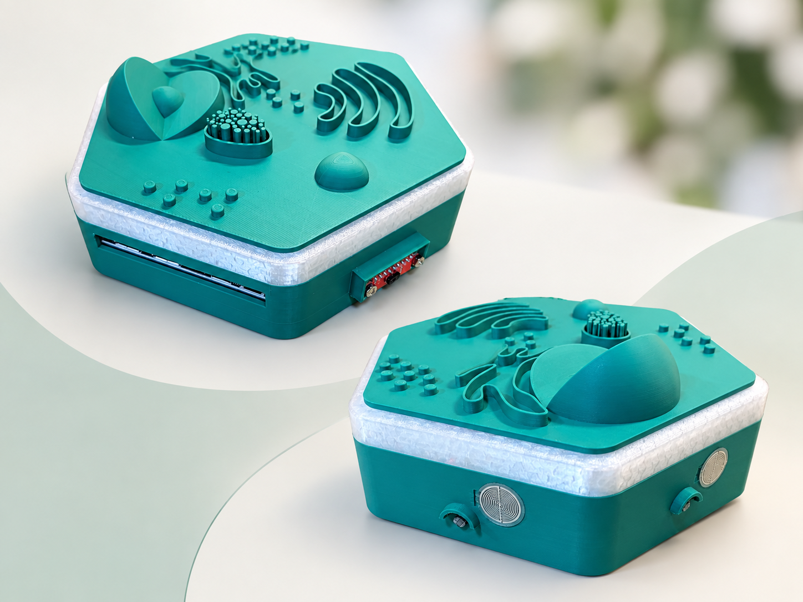
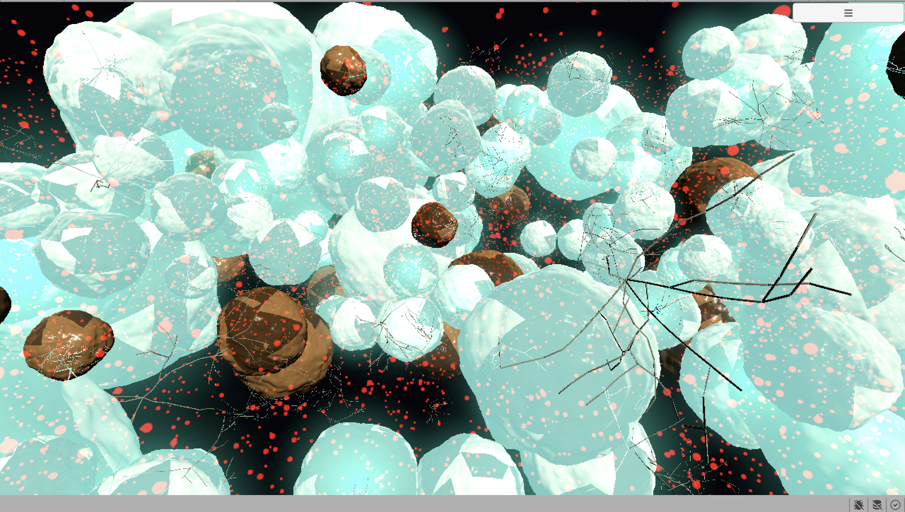
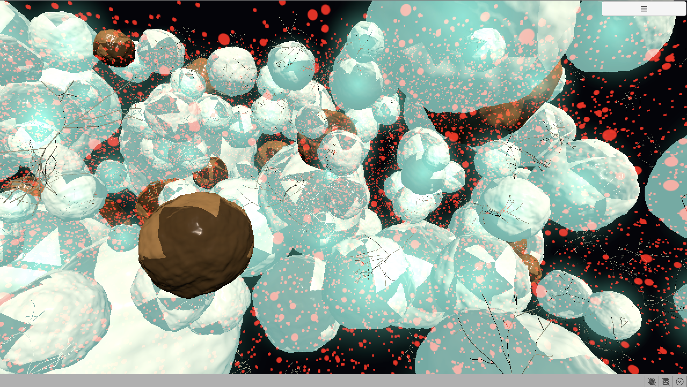
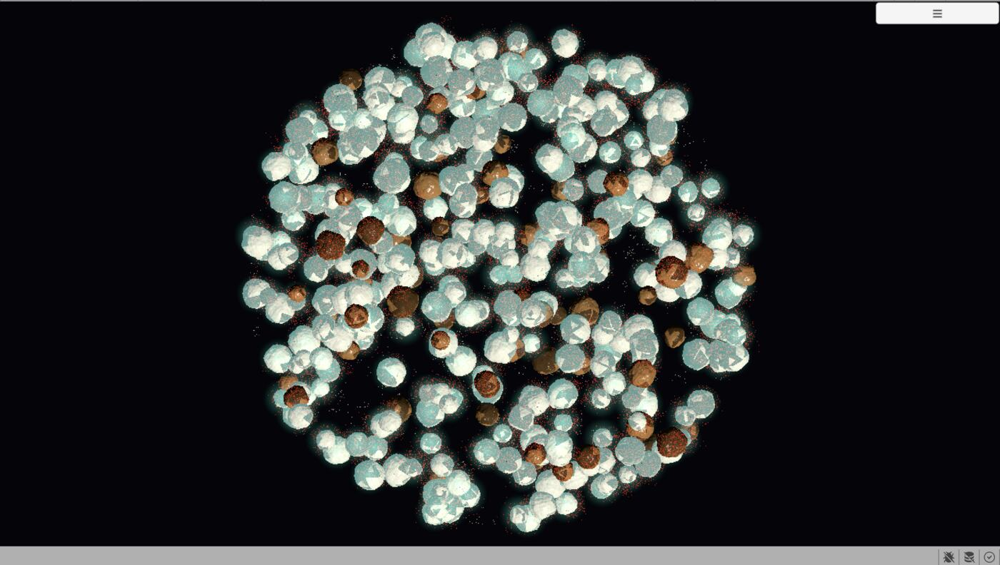

Tejing Wang
王特警
Neuro-Symbolic AI · Graph-based Concept Learning · Intelligent Agents
神经符号人工智能 · 图概念学习 · 智能体系统
About关于
I am a student in Artificial Intelligence at Shaanxi Normal University, continuing on to an academic master's program there in the School of Artificial Intelligence and Computer Science, advised by Prof. Fei Hao.
我是陕西师范大学人工智能专业的学生，本科毕业后将继续在本校人工智能与计算机科学学院攻读学术型硕士学位，导师为郝飞教授。
My research interests center on neuro-symbolic intelligence and graph-based concept cognition learning, alongside formal concept analysis, explainable AI, LLM-empowered education, digital twins, and embodied intelligence. I'm interested in how structured, symbolic knowledge can make large language model systems more interpretable, controllable, and cognitively grounded.
我的研究兴趣集中在神经符号智能与图概念认知学习，同时也关注形式概念分析、可解释人工智能、大语言模型赋能教育、数字孪生与具身智能。我关心的问题是：结构化的符号知识如何能让大语言模型系统变得更可解释、更可控、更具认知基础。
My long-term goal is to pursue a Ph.D. in Artificial Intelligence abroad after my master's, working toward interpretable and trustworthy intelligent systems that bridge symbolic reasoning and modern foundation models.
我的长期目标是在硕士毕业后赴海外攻读人工智能博士学位，致力于构建连接符号推理与现代基础模型的可解释、可信赖智能系统。
Research Statement研究陈述
My research asks how symbolic, structured knowledge can make large language model systems more interpretable and controllable. In my undergraduate work on automated geography question answering, I combined large language models with three-way concept analysis to turn implicit textbook knowledge into explicit decision rules — an early attempt at grounding a black-box model in something a person can inspect and reason about.
我关心的问题是：结构化的符号知识如何能让大语言模型系统变得更可解释、更可控。在本科阶段的地理自动解题研究中，我把大语言模型与三支概念分析结合起来，把教材中隐含的知识转化为显式的决策规则——这是我第一次尝试让一个"黑箱"模型的推理过程变得可以被人检查和追问。
This concern with structure carries into my current work: a survey of neuro-symbolic agentic AI, organized around planning, memory, and safety/verification, and a longer-term interest of mine in graph-based concept cognition learning — using graph structures to represent and reason over concepts, in the same spirit as how three-way concept analysis represents formal contexts. In parallel, my work on digital twins and embodied, sensor-driven systems has given me a hands-on sense of how models trained in isolation behave once they have to track a changing physical or biological environment.
这种对"结构"的关注延续到了我目前的工作中：一篇聚焦规划、记忆与安全/验证的神经符号智能体综述，以及我更长期的兴趣方向——图概念认知学习，即用图结构来表示和推理概念，其思路与三支概念分析表示形式背景的方式一脉相承。与此同时，我在数字孪生与传感器驱动的具身系统上的工作，也让我对"一个在孤立环境中训练出来的模型，一旦要跟踪不断变化的物理或生物环境会表现如何"有了更直观的体会。
Going forward, I want to bring these threads together in a Ph.D.: building agentic systems whose reasoning is not just performant but legible — where structured knowledge constrains and explains what a model does, rather than being bolted on after the fact.
接下来，我希望在博士阶段把这几条线索汇合起来：构建不仅性能好、而且推理过程可读的智能体系统——让结构化知识去约束和解释模型的行为，而不是事后再补一层解释。
You can see the papers behind this work, organized by project with my own notes, in my reading library.
这些工作背后阅读过的论文，按项目分类并附有我的笔记，可以在我的论文库中查看。
News动态
Continuing as an academic master's student at Shaanxi Normal University, now advised by Prof. Fei Hao.
确定继续在陕西师范大学攻读学术型硕士，导师为郝飞教授。
Concluded my undergraduate research assistantship at Xidian University with Prof. Zhihan Lyu.
结束了在西安电子科技大学吕智涵教授课题组的本科生科研助理工作。
Finalized the research scope for a survey on neuro-symbolic agentic AI, organized around planning, memory, and safety/verification.
确定了神经符号智能体综述的研究范围，围绕规划、记忆与安全/验证三部分展开。
Started my undergraduate research assistantship at Xidian University, supervised by Prof. Zhihan Lyu.
开始在西安电子科技大学吕智涵教授课题组担任本科生科研助理。
Submitted my first-author paper on automated geography QA system based on LLM and three-way concept analysis to Applied Soft Computing.
以第一作者身份将基于大语言模型与三支概念分析的地理试题自动解答系统的论文投稿至 Applied Soft Computing。
Started work on the automated geography QA system based on LLM and three-way concept analysis, supervised by Prof. Fei Hao.
在郝飞教授指导下开始进行基于大语言模型与三支概念分析的地理试题自动解答系统的研发工作。
Education教育背景
M.S. in Artificial Intelligence (Academic Master's)
人工智能学术型硕士
School of Artificial Intelligence and Computer Science · Xi'an, China
人工智能与计算机科学学院 · 中国西安
Advisor: Prof. Fei Hao · Research direction: Graph Learning, Concept Learning, Neuro-Symbolic AI
导师：郝飞教授 · 研究方向：图学习、概念学习、神经符号人工智能
B.Eng. in Artificial Intelligence
人工智能工学学士
School of Artificial Intelligence and Computer Science · Xi'an, China
人工智能与计算机科学学院 · 中国西安
Experience科研经历
Undergraduate Research Assistant · Supervised by Prof. Fei Hao
本科生科研助理 · 导师： 郝飞教授
Research topics: large language models, knowledge-driven intelligent systems, educational AI, and interpretable reasoning.
研究方向：大语言模型、知识驱动的智能系统、教育人工智能与可解释推理。
Undergraduate Research Assistant · Supervised by Prof. Zhihan Lyu
本科生科研助理 · 导师： 吕智涵教授
Digital twin and embodied-cell research: perception, mapping, and interaction mechanisms between physical entities and virtual models, toward embodied units that sense environmental change and express it synchronously in a virtual system.
数字孪生与具身细胞方向研究：探索物理实体与虚拟模型之间的感知、映射与交互机制，构建能够感知环境变化并在虚拟系统中同步表达的具身化单元。
Projects项目经历
NextScience — AI Research Platform for Early-Career Scientists
NextScience —— 面向早期科研人员的 AI 研究平台
An AI-powered academic research platform built solo (Next.js, Supabase, DeepSeek API), featuring an AI Reader for paper summarization, a Literature Map for visualizing citation networks (Semantic Scholar + OpenAlex + React Flow), and Nova, an AI research mentor for personalized research planning. No longer actively maintained, but still live at nextscience.space.
独立设计与开发的 AI 学术研究平台（技术栈：Next.js、Supabase、DeepSeek API），核心功能包括论文智能摘要的 AI Reader、基于 Semantic Scholar 与 OpenAlex 数据构建的文献关系图谱（React Flow 可视化），以及提供个性化科研规划的 AI 导师 Nova。目前已停止运营维护，但网站仍可正常访问：nextscience.space。
Embodied Cell Prototype & Structural Design
具身细胞原型与结构设计
An ESP32-based art/research installation exploring embodied, environment-reactive behavior: RGBW LEDs driven by photoresistor, force-sensing, and time-of-flight sensor inputs, with 3D structural design and sensor/LED layout modeled in Onshape.
基于 ESP32 的具身、环境感应交互装置：通过光敏电阻、压力传感器与飞行时间传感器驱动 RGBW LED 灯带，并使用 Onshape 完成三维结构与传感器/灯光布局设计。




Publications论文发表
Skills技能
Programming & Engineering
编程与工程
Python, C++, Linux; full-stack web development (Next.js, FastAPI, Supabase); embedded hardware (ESP32, sensors, LED systems)
Python、C++、Linux；全栈 Web 开发（Next.js、FastAPI、Supabase）；嵌入式硬件（ESP32、传感器、LED 系统）
Artificial Intelligence
人工智能
Formal concept analysis and three-way concept analysis; machine learning and deep learning; LLM application development and agent systems
形式概念分析与三支概念分析；机器学习与深度学习；大语言模型应用开发与智能体系统
LLM-Assisted Workflows
大模型辅助工作流
ChatGPT, Claude, Claude Code, Codex — code generation, debugging, and refactoring; academic writing and English-language polishing
ChatGPT、Claude、Claude Code、Codex——代码生成、调试与重构；学术写作与英文润色
Research
科研能力
Literature review and reproduction; experimental design and comparative analysis; academic writing in Chinese and English; LaTeX
文献阅读与复现；实验设计与对比分析；中英文科研写作；LaTeX 排版
Design & Modeling
设计与建模
3D modeling in Onshape; embodied-cell prototype design; digital twin structural design
Onshape 三维建模；具身细胞原型设计；数字孪生结构设计
Languages
语言
Mandarin Chinese (native); English — IELTS score to be added
中文（母语）；英语——雅思成绩待补充
Awards & Honors获奖情况
Competitions
竞赛获奖
National First Prize, China Robot and Artificial Intelligence Competition (2025)
National First Prize, Geography Teaching AI Innovation Achievement Competition (2025)
National Third Prize, Global Campus Artificial Intelligence Algorithm Elite Competition (2025)
Provincial First Prize (Shaanxi), China Robot and Artificial Intelligence Competition (2025)
Provincial Second Prize (Shaanxi), Global Campus Artificial Intelligence Algorithm Elite Competition (2025)
Second Prize, Information Security and Adversarial Technology Competition, Northwest Region (2025)
Third Prize, China Collegiate Computing Design Competition, Northwest Region (2024)
中国机器人及人工智能大赛 · 国家级一等奖（2025）
地理教学人工智能创新成果评比 · 国家级一等奖（2025）
全球校园人工智能算法精英大赛 · 国家级三等奖（2025）
中国机器人及人工智能大赛（陕西赛区）· 省级一等奖（2025）
全球校园人工智能算法精英大赛（陕西赛区）· 省级二等奖（2025）
信息安全与对抗技术竞赛（西北赛区）· 二等奖（2025）
中国计算机设计大赛（西北地区赛）· 三等奖（2024）
Software Copyrights
软件著作权
"Weather Teaching Assistant Platform" (Reg. No. 16269380)
"Deep Learning-Based Face Recognition Classroom Attendance System" (Reg. No. 16202857)
《气象教学助手平台》（登记号：16269380）
《基于深度学习的人脸识别课堂签到系统》（登记号：16202857）